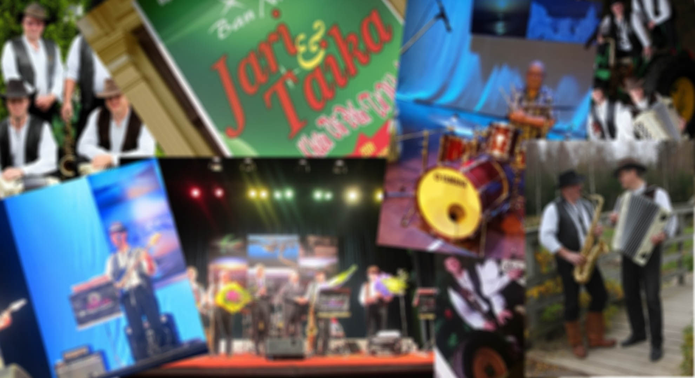

Etusivu
Yhtye
Soitin
Settilistat
Ota yhteyttä
Taikanappi
Jari ja taika -yhtye

Settilista
1 Setti
Åsele valssi / Metsäkukkia
Hanurin kutsu
Orpo
Siperia
Uno
Palaa luokseni
Moksis / Lookia
When I'm 64
Teetä kahdelle / Rebekka
Ystävänpäivä / Sway
Roteva ja romanttinen
Sukuvika
JänkäJenkka
Kevättä rinnassa
2 Setti
Sininen huivi
Metsäpirtti / Turun surusilmä
TV:n kokoinen haitari
Merimies
Rakkaus on sininen
Aamu
Paratiisi
Mahdunko maailmaas
Lapin tango
Kesäinen muisto / Punaiset lehdet
Paha vaanii
Kohti Valoa
Lukkari Heikin polkka
Karjalan poikia
3 Setti
St Pauli ja Reeperbahn
Eviva Espanja
Besame Mucho
Kuihtuu kesäinen maa
Sitä saa mitä tilaa
Kaksin rannalla yksinäiset
Feisbuugie
Teryleeniä
Kesäillan valssi / Kyrösjärven laineilla
Mantsurian kukkuloilla
Saharan lilja
Kangastusta
Aamuyön ikuisuus
Kaksi puuta
Marilyn
Juankoski here I come
4 Setti
The Midnight Sun will never set
On hetki
On lautalla pienoinen kahvila
Bulu bulu bulu
Vie meidät rakkauteen
Yön kuningatar
Taas on aika auringon
Saarenmaan valssi
Olet mun sä vain
Let it be me
Metsämökin tonttu
Friduna Skiguna
Mä jäin kii
Juhlimaan
Rock around the clock
Blue Suede Shoes
5 Setti
Are you lonesome tonight
Charade
Oot täydellinen
Hyvännäköinen
Kaikkea hyvää
Hiljainen on laulu rakkauden
Kesäilta Saimaalla
Takaisinpaluu
Tango Pelargonia
Soita mulle kitarain
Soita Humupekka
Souvaripoikia
Tallinnan illat
Pohjolan yö
6 Setti
Saanhan viimeisen tanssin
Väliaikainen / Rakkauden Satu
15 kesää
15:sta yö
Lähdön hetkellä
Tuuli tuo tuuli vie
Just a Gigolo
Tuollainen tyttö
Muruseni
Aikuinen nainen
Rantakoivun alla (Dm)
Yölintu
Lentävä kalakukko
Kulkurin masurkka
7A Setti
Kulkurin kaiho
Kalastaja Eemelin valssi
Tiikerihai
Pihapihlaja
Asuncion
Guapita
Kissa vieköön
Bye bye blackbird
Amor Amor
Caravan
Letkis
Puhelinlangat laulaa
Häävalssi elokuvasta Kummisetä
Käyn uudelleen eiliseen
7B Setti
Tammerkoski
Yö Altailla
Suhmuran Santra
Kerran saavun satamaan
Eva
Sulamith
Yö ikkunan takana
Yön tummat siivet
All of me
Muista minua
Päivin öin
Kaksi ruusua
Vesivehmaan jenkka
Rempallaan
8 Setti
All my loving
Eight days a week
I saw her standing there
Ja rokki soi
That's allright mama
Mun sormuksein
Saat miehen kyyneliin
Always on my mind
Jos jotain yrittää
Äidin pikkupoika
La Bamba
Vielä on kesää jäljellä
Tsingis Khan
Titanic
9 Setti
Rasputin
Volga
Daa da daa
R A K A S
Dirlandaa
Syntymäpäivä (SIG)
Mä putoan
Syksyn sävel
Muisto vain jää
Elämältä kaiken sain
Juodaan viinaa
Ei tippa tapa
Viimeinkin
Vanhoja poikia viiksekkäitä
10A Setti
Rappiolla
Bourbon Street
Hän
Salattu suru
Lauantai-ilta
I only wanna be with you
Cadillac
Walkin' the dog
Kauppaopiston naiset
Ajetaan tandemilla
Tykkään susta niin että halkeen
Kaunis nainen
10B Setti
Sirpa
Rentun ruusu
Live is life
Poing poing
Oikeesti
Onni on matka
Mitä silmät ei nää
Kultaniityt
Valot
Can't help falling in love
Salainen rakkaus
Tähdet tähdet
Guantanamera
Jos sä tahdot
11 The Beatles
And I love her
Michelle
Girl
In my life
Eleanor Rigby
Here, there and everywhere
She's leaving home
Yesterday
When I'am 64
Strawberry fields 4 ever
Hey Jude
Because
Something
The long and winding road
Let it be
Till there was you
Honey Pie
12 Setti
Fly me to the moon
Bye Bye Blackbird
C'est si bon
Cavatina
Petite Fleur
Kissa vieköön
Viimeinen ilta
Kuolleet lehdet
How insensitive
Lady be good
Misty
Georgia on my mind
13 Setti
Tea for two
The midnight sun will never set
Kuutamoserenadi
Caravan
Smoke gets in your eyes
Rebekka
Rakkauden Satu
Se jääköön huomiseen
Ranskalaiset korot
The girl from Ipanema
The days of wine and roses
Vippaa mulle viitonen
Extra Setti
Akselin ja Elinan häävalssi
Nuoruusmuistoja
Hopeinen Kuu
Paranoid
Jätkän humppa
Satumaa
Sä kaunehin oot
Kultainen nuoruus
Tango Sinikalle
Suvivalssi
Minä rakastan sua